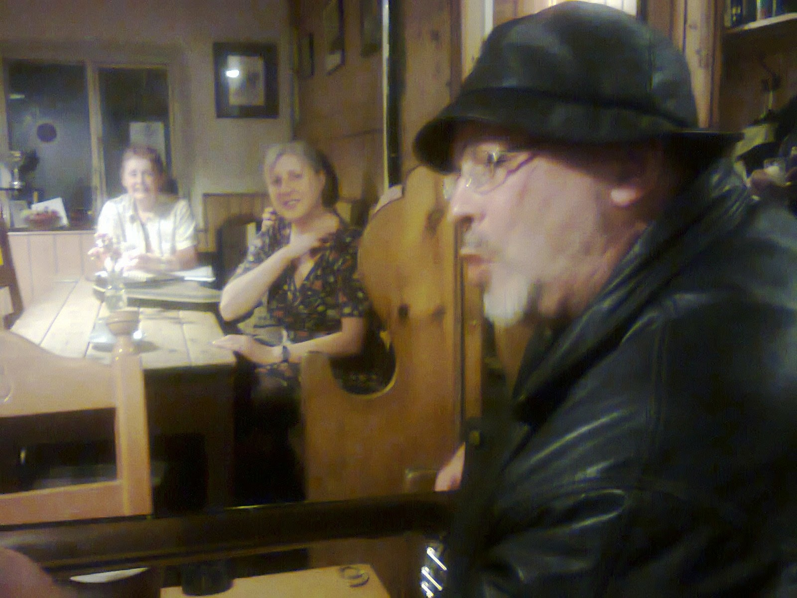

| Sailing, not riding |
{kind=link}
Oh as I
was a riding along,
In the heighth of my glory.
Oh as I was
a-riding along,
Oh come hear my sad story.
Oh a fair and handsome maiden I did
see,
And I asked her if she’d come along with
me
Some pleasure and some pastime to see
As we’re riding down to Portsmouth
As you might be able to guess from that,
I've just finished my second novella based on the life of Nelson. Nelson rode
down to Portsmouth several times in his naval life, although I don't know if
any of his odd relationships with women was quite as disastrous as this one.
Nelson came from Norfolk, and I'm writing
this in a Travel Lodge in Gorleston, not far from his beginnings. I've come to
attend a funeral tomorrow morning (Friday), and the drive from Manchester was
long, hot, and uncomfortable. Nelson, at the age of 12, went by coach from
Burnham Thorpe, his home, to London, and from thence to Chatham on the Medway.
When he arrived, not knowing anyone and not
having been met despite the fact that it was his uncle, Captain Maurice
Suckling, who had secured him a place on his ship, the poor lad was forced to
hang about in the coaching inn yard hoping that somebody would take pity on him.
Finally, an unknown officer approached him,
offered him some food, possibly a bed for the night (history is an incomplete
thing sometimes), and hired a boat to take him out to his uncle's ship, where
again no one was expecting him. His Uncle Suckling turned up on board four or
five days later. Quite normal behaviour, apparently. Talk about breeding them
tough.
What set me thinking was the journey
itself. This is the 21st-century, for God's sake, and oop north we have little
things called motorways. My AA Route planner told me the journey would take
four hours 38 minutes (no halves or quarters you notice, no shilly-shallying),
and included about 14 miles on the M1. The rest was what they called A-roads,
and God forgive them if they weren't joking. Bit of dual carriageway came to
seem like a raving luxury. The most interesting thing about the route was that
the only landmarks are church spires. (And roadworks, natch.)
Got to the Travel Lodge just short of six
hours later. Average speed 37 mph – hard travellin’, eh? After he picked up his
first ship at the age of 12, Nelson sailed across the Atlantic twice, up to the
Arctic Circle where he claimed to have tried to kill a polar bear, then to
India for 2 1/2 years, during which time he caught malaria. Several times in
his short and active life this recurring disease got very close to killing him,
and this first time he was shipped home from India as a matter of extreme
urgency (let’s say a couple of months!) to live or die. By the time he returned,
incidentally, he was still only in his mid teens. And here I am whining about
some crappy roads.
I was down here for the funeral of Auntie
Eryl, who lived until she was 96, happily. Nelson only made it to 47, during
which time he lost an eye and an arm, had recurrent seasickness, dysentery, was
struck down frequently by the mosquito-borne curse, and surely should have died
a great deal earlier.
Try as I might to get inside his skin, he
remains a fascinating mystery. He was clearly charismatic, much ‘loved’ by his
seamen (whom he led into the most ridiculous danger, sometimes very foolishly
but always from the front), but was quite clearly (which, in terms of writing
history, probably means sod all) a hopeless prig and an unattractive boaster.
There was also the ‘woman thing’.
Nelson’s mother died when he was nine, and
you don’t have to be Doctor Freud to suspect it might have done him an awful
lot of damage. His father was a country parson, successful apparently only in
fathering children (nine in all) and Uncle Suckling spotted Horatio as the only
one worth throwing money and help at, although he did leave the others a bit of
cash. And lo, the others achieved not a lot. There was even alcoholism,
gambling, and an illegitimate child (or pregnancy; there’s no record of the
outcome.)
As an adult Horace, as he originally called
himself, had problems. He fell in love at the drop of a hat, and was rebuffed a
couple of times. He was, in the words of J Peasemold Gruntfuttock ‘looking for
someone to love,’ and he was desperate for children. He married a widow with a
child, but they never managed another one. What he did for sex is politely
shaded by history, although young naval officers in exotic locations were very
keen on local mistresses, and if they were black or ‘native’ it apparently did
not count as adultery or promiscuity. Useful, eh?
He had – and boasted about, although not to
his wife – an opera singer mistress in Leghorn, and finally Lady Hamilton, with
her husband’s apparent connivance. They had a daughter at last, and Nelson
denied forever that Horatia was his. Given that the name was something of a
giveaway, he must have been an optimist as well as a prig.
As far as one can tell, it was a genuine
love affair, and he even famously left Emma to the nation to look after. The
nation – plus ca change – ignored the bequest, and she died in Calais,
desperately in debt. To be fair, Emma had never been much good with cash,
except in screwing it off men. That’s not a sexist criticism: if I’d been born
in a starvation-level rural slum in Cheshire I hope I would have been as
successful at it. I doubt I’ve got the looks.
Ms Hart was a startlingly beautiful young
woman, intensely charismatic, intensely talented, and already had one
illegitimate daughter when she met Nelson. When she did meet him, as far as one
can tell, she was a plump and comfy woman, and their letters absolutely reek of
sensuality. In those days, also, being a prostitute early on in life was no bar
to later respectability, and indeed, respect. You had to survive. How you did
it was perhaps your business.
Tragic, really. Nelson courted violent
death almost manically. When it came, Emma was waiting faithfully for him at
home in the country, his wife and mother all rolled into one. Everything he’d
always wanted, except glory.
And he’d already got the glory.
 |
| Black Jake, Elaine and Tina. Singing in the Cross Keys. Licensed before Nelson was born |
{kind=link}
A couple of PSs
(that can’t be the plural, surely?). My first Nelson, with Endeavour Press, is
called Nelson: The Poisoned River, and this one will probably be called Nelson:
The Dreadful Havoc.
Thanks to
everyone who came to one of my three launches of Wild Wood (London, Manchester,
Uppermill). Sold lots of books, had enormous fun, and didn’t even have a
hangover! If anyone who’s got it on Kindle can bear to do a couple of lines of
review I’m offering big wet kisses all round (whoops – I’m not Emma Hamilton am
I? We’ve established that already.) Thanks to those who’ve already reviewed it.
All fives, too!
Thanks to Julia
Jones for publishing it, and Matti Gardner and Kate Fox for their brilliant
design.
Last PS. Down in
Suffolk I had my first pint of Adnams bitter in twenty years. Adnam is one of
the characters in Wild Wood, and the bitter is even more wonderful than I
remembered it. My eyes moisten as I write this…
Really last PS. Thanks to Rose Prince who
devoted her column in the Telegraph to Daisy Ferret’s Toad in the Hole. She did
wonders for the spelling wot Daisy writ in the book. Somebody had to! fw.to/GFzsfch
Nelson: The
Poisoned River http://amzn.to/1oekHl5
Wild Wood: From Golden Duck, or course, or
from Amazon. Proper book: http://amzn.to/1lJRUEX
Ebook http://amzn.to/1tDreex